- 中文名
- 正交向量
- 外文名
- orthogonal vectors
- 类 型
- 数学术语
- 向 量
- 既有大小又有方向的量
- 正 交
- 垂直
正交向量定义
编辑正交向量向量
在数学中，向量（也称为欧几里得向量、几何向量、矢量），指既有大小又有方向的量。它可以形象化地表示为带箭头的线段。
箭头所指：代表向量的方向；
线段长度：代表向量的大小。
在物理学和工程学中，几何向量更常被称为矢量。许多物理量都是矢量，比如一个物体的位移，球撞向墙而对其施加的力等等。与之相对的是标量，即只有大小而没有方向的量。一些与向量有关的定义亦与物理概念有密切的联系，例如向量势对应于物理中的势能。
[1]
正交向量欧几里得空间
设
上定义有被称为内积的满足一下四条公理的实函数
 ，
，
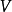
是实数域R上的有限维线性空间，在
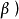
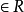
：（1）对称性：
，
=（
）；
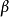
，（2）关于向量加法的线性性质：
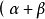
，
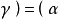
，
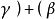
，
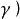
；（3）关于标量乘法的线性性质：
；
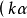
，
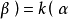
，（4）正定性：
，而且等号成立当且仅当
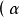
，
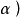
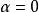
。这里
 ，
，
 ，
的任意向量，k是任意实数。则称
为欧几里得空间（Euclidean space），简称欧式空间。
，
的任意向量，k是任意实数。则称
为欧几里得空间（Euclidean space），简称欧式空间。
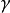
是正交向量正交
正交向量性质
编辑正交向量性质1
正交向量性质2
正交向量定理
编辑正交向量定理1
正交向量定理2
- 参考资料
-
- 1. 课程教材研究所，中学数学课程教材研究开发中心．高中数学（人教A版）必修四：人民教育出版社，2004
- 2. 陈志杰．高等代数与解析几何（第二版上册）：高等教育出版社，2008
- 3. 基于正交向量的秘密共享方案 ．爱学术[引用日期2017-10-20]
词条标签：
科普中国
致力于权威的科学传播
本词条认证专家为
V百科往期回顾


- 词条统计
-
- 浏览次数：85150次
- 编辑次数：7次历史版本
- 最近更新：2017-10-22
- 创建者：iamchenzetian